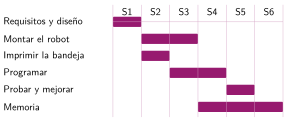
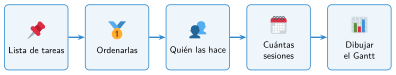

Planificar en el tiempo
🤔 Pienso5 min
Qué hago aquí: Piensa un momento y contesta con lo que ya sabes. No pasa nada si no lo sabes: es para empezar.
Por la mañana te duchas, desayunas, te vistes y preparas la mochila. ¿Qué tiene que ir antes que otra cosa?
📖 Leo y aprendo15 min
Qué hago aquí: Lee despacio, mira los dibujos y los ejemplos, y quédate con la idea clave del final.
Planificar es decidir qué hay que hacer, en qué orden y cuánto tarda.


✏️ Hago25 min
Qué hago aquí: Haz las actividades en orden. Empieza siempre por las básicas.
Mira el Gantt. ¿En qué sesiones se monta el robot?
Une las tareas que dependen una de otra: la primera tiene que ir antes.
| Diseñar la pieza • | • Probar el programa |
| Montar el robot • | • Imprimir la pieza |
Escribe cuatro tareas pequeñas para «hacer el robot regador».
Dibuja el Gantt del robot regador en 6 sesiones con tus tareas.
| Tarea | S1 | S2 | S3 | S4 | S5 | S6 |
|---|---|---|---|---|---|---|
🚀 Amplío (si quieres saber más)
Qué hago aquí: ¿Has terminado? Lee la curiosidad o elige el reto. Es voluntario.
Rehaz tu Gantt para solo 4 sesiones. ¿Qué tareas harías a la vez? ¿Qué quitarías?
✅ Compruebo5 min
Qué hago aquí: Contesta sin mirar la ficha y marca cómo lo llevas.